Audiência: Alunos de ensino médio.
Habilidades necessárias: Conhecimento básico da teoria da evolução e genética.
O objetivo dessa atividade é entender como é possível localizar genes relacionados a algumas características nos seres vivos.
Trabalhando com variações de um nucleotídeos das sequências de cachorros com diferentes tipos de pelos (curtos e longos, encaracolados e lisos), vamos aprender como podemos descobrir quais genes estão associados a essa característica.
Constantemente nos deparamos com notícias do tipo, "cientistas encontram um novo gene relacionado ao câncer". Mas você já se perguntou como é possível encontrar um gene?
Veja que essa procura é feita dentro do genoma humano, que é imenso. Mas para entender como é possível encontrar genes que causam doenças, vamos começar com um problema mais simples, primeiro olhando para a pelagem de cachorrinhos.
Em 2005, cientistas obtiveram a primeira sequência de genoma completo de cachorros, que consiste de uma sequência de 2.400.000.000 pares de nucleotídeos (A,C,T e G) distribuídos em 39 pares de cromossomos.
Mas para que serve toda essa informação? Nessa atividade, vamos aprender uma abordagem para identificar genes associados a determinadas características, ou fenótipos, a partir de sequências do genoma, chamada de estudos de associação genômica (Genome-Wide Association Studies - GWAS).
GWAS envolve a busca em sequências do genoma de um grande número de indivíduos, nesse caso, vários cachorros, para encontrar diferenças, ou variações associadas com fenótipos particulares, para então identificar genes responsáveis por essas características. Você vai aprender sobre a ciência por trás do GWAS ao trabalhar em diferentes exercícios para achar as variações associadas com a textura e tamanho da pelagem de cachorros.
GWAS usa marcadores de DNA distribuídos pelo genoma chamados de polimorfismo de nucleotídeo único (Single Nucleotide Polimorfism - SNP). Um SNP é uma variação em um único nucleotídeo em uma posição particular do genoma. Nem toda mudança em um nucleotídeo é um SNP, mas falaremos melhor sobre mutações em um outro exercício.
Nada melhor para entender algum conceito, do que praticar. Para nossa sorte, cientistas sequenciaram o genoma de muitos cachorros domésticos, de uma variedade de raças diferentes. Eles identificaram milhões de variações comuns entre esses genomas e suas localizações nos cromossomos. Localizações específicas são apresentadas como o número do cromossomo seguido do número do nucleotídeo nesse cromossomo. Por exemplo, em uma localização particular, alguns cachorros tem um A, enquanto outros tem um C. Cachorros podem ter duas cópias do C nessa localização, duas cópias do alelo A ou uma de cada alelo (cachorros são diplóides, como nós humanos).
A partir do momento que sabemos onde os SNPs estão localizados no genoma de um organismo, eles podem ser usados para determinar onde estão certos genes de interesse. Em um estudo do tipo GWAS, cientistas tipicamente vão comparar SNPs em dois grupos de indivíduos, um com uma versão de uma características (por exemplo, pelo longo em cachorros) e outra com outra versão da característica (por exemplo, pelo curto em cachorros), sendo de forma mais geral conhecido como estudos do tipo caso controle. Eles então identificam os SNPs que são encontrados mais comumente em cachorros com uma versão da característica do que na outra. Esses SNPs servem de marcadores para a região do genoma canino onde o gene responsável para determinar a característica deve estar presente.
Mas porque certos SNPs estão associados com certas características? SNPs que ocorrem em um gene ou em uma área regulatória perto de um gene pode afetar diretamente a função do gene resultando na alteração da características. Por exemplo, a mudança de um A para um C no exemplo anterior dos genomas caninos é responsável por um cachorro ter pelo curto. Entretanto, um SNP pode não ser a causa da característica e ainda sim estar associado a ela, se ele estiver perto o suficiente da mudança que causa a característica, ele pode ser herdado junto.
Variações em apenas três genes agem em diferentes combinações para determinar uma grande gama de texturas vistas nas pelagens de cachorros, dos pelos encaracolados dos poodles aos longos pelos lisos dos beagles. Um grupo de pesquisadores do instituto de pesquisa genômica humana (National Human Genome Research Institute - NHGRI), descreveu esses variantes em um artigo da revista Science.
Vamos explorar como o GWAS funciona usando um exemplo simples. Cientistas compararam SNPs em dois grupos de cachorros, aqueles com pelagem branca e aqueles com pelagem preta. Se um tipo de SNP é encontrado muito mais frenquentemente em cachorros com pelagem branca do que em cachorros com pelagem preta, o SNP é dito associado a pelagem branca. O SNP associado marca a região do genoma que pode conter um gene envolvido em determinar a pelagem branca. A tabela abaixo mostra alelos em 17 lócus do genoma de oito diferentes cachorros, quatro com pelagem preta e quatro com pelagem branca. Cada lócus de SNP é representado por dois nucleotídeos, um de cada cromossomo parental. Para determinar se algum desses lócus têm SNPs associados a pelagem de cor branca, você vai comparar os SNPs de vários cachorros com pelagem preta e cachorros com pelagem branca.
Para fazer a comparação, faça o seguinte:
Quando você clica no lócus 2:
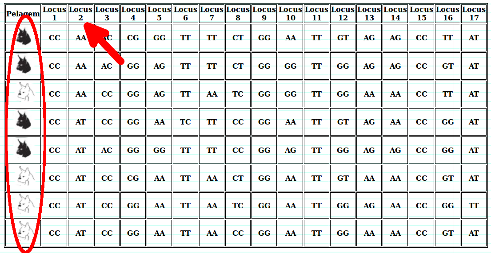Quando você clica no lócus 16:
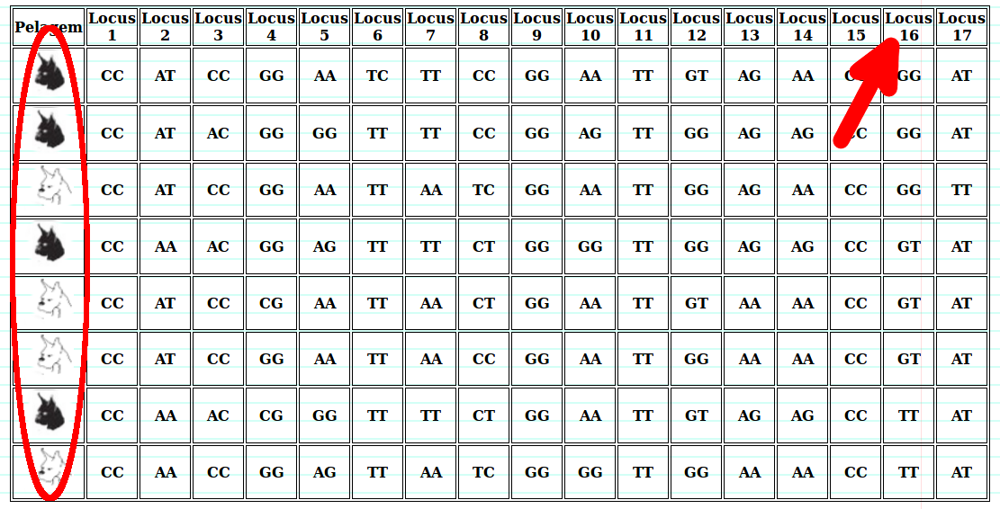| Pelagem | Locus 1 | Locus 2 | Locus 3 | Locus 4 | Locus 5 | Locus 6 | Locus 7 | Locus 8 | Locus 9 | Locus 10 | Locus 11 | Locus 12 | Locus 13 | Locus 14 | Locus 15 | Locus 16 | Locus 17 |
|---|---|---|---|---|---|---|---|---|---|---|---|---|---|---|---|---|---|
| 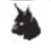 | CC | AT | CC | GG | AA | TC | TT | CC | GG | AA | TT | GT | AG | AA | CC | GG | AT |
| CC | AT | AC | GG | GG | TT | TT | CC | GG | AG | TT | GG | AG | AG | CC | GG | AT | |
| CC | AA | AC | CG | GG | TT | TT | CT | GG | AA | TT | GT | AG | AG | CC | TT | AT | |
| CC | AA | AC | GG | AG | TT | TT | CT | GG | GG | TT | GG | AG | AG | CC | GT | AT | |
| 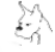 | CC | AT | CC | CG | AA | TT | AA | CT | GG | AA | TT | GT | AA | AA | CC | GT | AT |
| CC | AT | CC | GG | AA | TT | AA | TC | GG | AA | TT | GG | AG | AA | CC | GG | TT | |
| CC | AT | CC | GG | AA | TT | AA | CC | GG | AA | TT | GG | AA | AA | CC | GT | AT | |
| CC | AA | CC | GG | AG | TT | AA | TC | GG | GG | TT | GG | AA | AA | CC | TT | AT |
Um SNP em particular é 100% associado com a cor da pelagem quando todos os cachorros com a pelagem branca tem o mesmo nucleotídeo naquela posição, enquanto todos os cachorros de pelagem preta tem outro nucleotídeo. Se um SNP é 100% associado com o fenótipo, o SNP pode estar localizado dentro do gene responsável e ser a causa do fenótipo observado. Qual lócus da tabela está 100% associada a cor da pelagem, ou seja, que organiza os cachorros pela cor e têm nucleotídeos diferentes para cada cor de pelagem?
Em geral, quanto mais próximos dois SNPs estão no DNA, é provável que eles sejam herdados juntos. Assim, se um SNP está perto de um gene, provavelmente ele sempre será herdado junto com esse gene. O grau dessa associação (aqui, se as cores dos cachorros ficam organizadas em dois grupos, não se misturam) prediz o quão perto um SNP em particular está de um gene responsável por um fenótipo. Você consegue identificar na tabela acima, um SNP que de alguma forma está associado a cor da pelagem?
SNPs não são associados a cor da pelagem, quando eles ocorrem mais ou menos na mesma frequência em cachorros com pelagem preta e pelagem branca. Qual coluna (lócus) de um SNP que não está associado a cor da pelagem?
Observando suas respostas acima, quais seriam as possíveis explicações para um SNP estar associado a um fenótipo da cor do pelo?
Bem, duas coisas podem estar acontecendo, um SNP pode ser associado com um fenótipo porque ele causa esse fenótipo (como a cor do pelo) ou porque é ligado a ele, ou localizado perto na sequência de DNA ao alelo que causa o fenótipo.
A resposta vem das aulas de genética, quando aprendemos sobre cruzamento cromossômico (ou crossing-over), que é uma troca de material genético entre cromossomos homólogos.
Veja que na tabela, quando vemos que em um lócus o cachorrinho tem um AC, significa que em um cromossomo ele tem um A e em outro ele tem um C naquela posição da cadeia de DNA, mas quando fazemos a meiose, para gerar os nossos gametas e se reproduzir, não mandamos sempre só o primeiro ou só o segundo alelo, podemos misturá-los com o crossing-over.
Vamos a um exemplo mais concreto, imagine o segundo cachorro, ele tem CC AT CG GG como alelos nos quatro primeiros loci, ele vai produzir um gameta C A C G (somente os primeiros alelos) e outro C T G G, os gametas parentais, mas somente se houver troca entre os cromossomos que ele poderá produzir o gameta C A G G, porque o A vem do primeiro alelo e o G do segundo alelo, porém quanto mais perto os loci são, mais raro é esse evento de troca, ou seja, só vemos cromossomos como os parentais para essa devida posição.
Tudo bem, agora já temos uma ideia, de como podemos usar os dados de vários cachorros para ver a associação de alguns loci a determinadas características (fenótipos). Mas devemos lembrar que quando falamos de loci, eles estão em um cromossomo e tem uma posição nesse cromossomo. Outra coisa, é que estamos no "olhômetro" aqui, o que é ruim, pois pode trazer grande ambiguidade para nossas conclusões, com exceção da resposta a primeira pergunta que era quando a associação é de 100%, veja que temos mais de uma possibilidade nas outras respostas, precisamos de meios de medir essa associação. Então agora vamos avaliar dados reais e ver como podemos resolver esses problemas.
Vamos começar olhando a tabela abaixo, para a pelagem canina. Cada linha representa a sequência obtida de um cachorro, não a sequência toda, somente o que está na posição indicada na coluna, naquele cromossomo, naquele lócus. As sequências mostram SNPs em sete locais no cromossomo 32. Observe esses dados e tente agrupar cachorros com pelos longos e aqueles com pelos curtos juntos, você pode predizer, como antes, quais SNPs têm a maior associação com os fenótipos de pelo longo e pelo curto?
| Cachorro | Pelagem | chr32 7420804 | chr32 7472206 | chr32 7473337 | chr32 7479580 | chr32 7482867 | chr32 7490570 | chr32 7492364 |
|---|---|---|---|---|---|---|---|---|
| 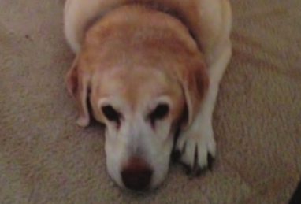 | Curto | TC | AA | GT | TT | AG | TT | CG |
| 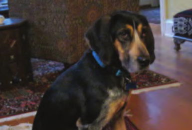 | Curto | TC | AA | GG | TT | GG | CC | GG |
| 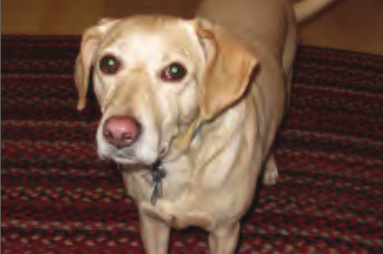 | Curto | CC | GA | GT | CT | AG | CT | GG |
| 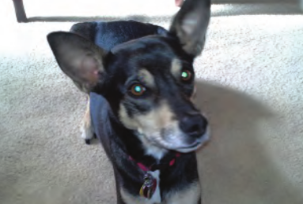 | Curto | TC | GA | GG | CT | AA | TT | CG |
| 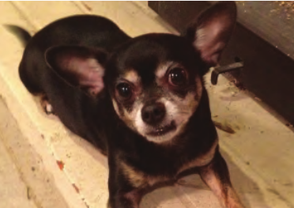 | Curto | CC | GA | GT | CT | AG | CT | GG |
| 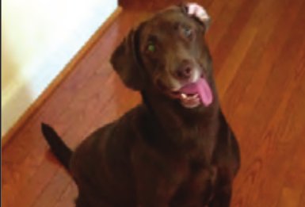 | Curto | TC | AA | GG | TT | GG | CC | CG |
| 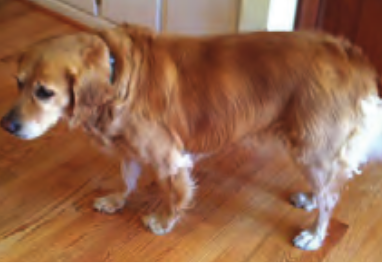 | Longo | CC | AA | TT | TT | GG | TT | GG |
| 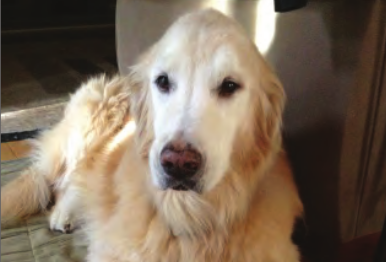 | Longo | TC | AA | TT | TT | GG | TT | GG |
| 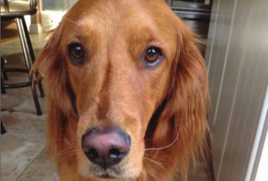 | Longo | TC | AA | TT | TT | GG | TT | GG |
| 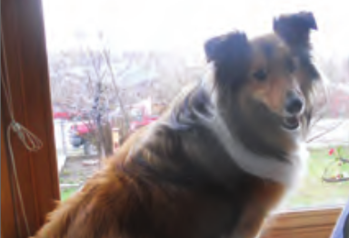 | Longo | CC | AA | TT | TT | GG | CT | CG |
| 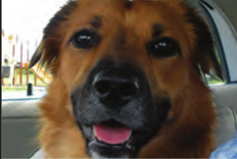 | Longo | TT | AA | TT | TT | GG | TT | GG |
| 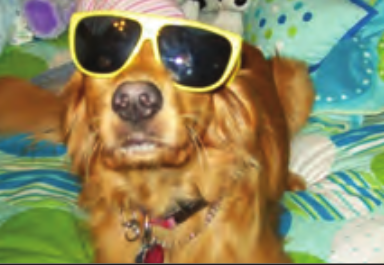 | Longo | CC | AA | TT | TT | GG | TT | GG |
O olhômetro aqui pode não ser uma boa ideia, mas podemos examinar os dados para medir quais SNPs têm a maior associação.
Para cada lócus de SNP, vamos fazer o seguinte:
No lócus Chr32 7473337 temos os alelos T e G
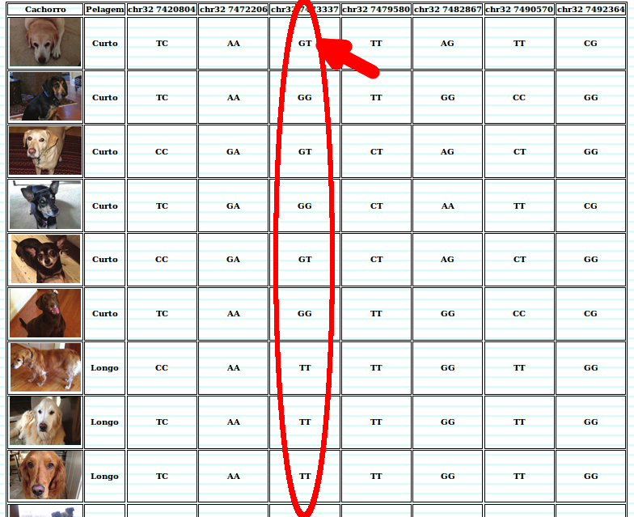Então preenchemos eles na tabela
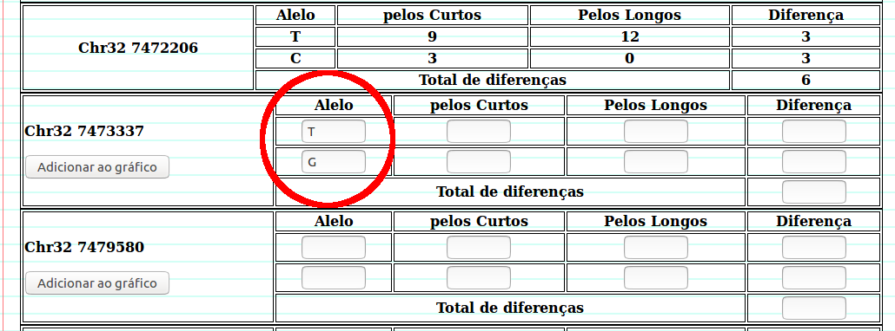No lócus Chr32 7473337 contando os T para os pelos curtos temos:
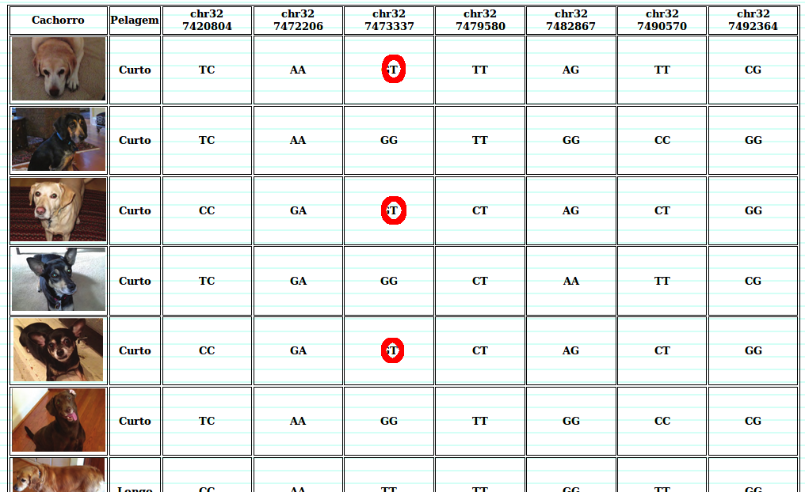Então anotamos na tabela.
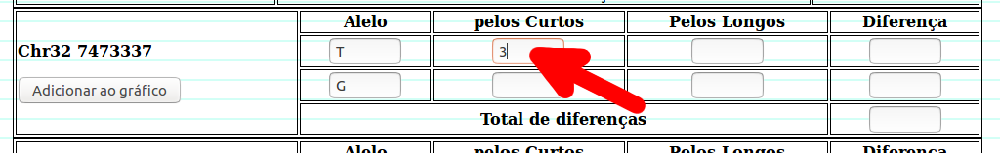Depois podemos calcular a diferença entre alelos dos dois grupos de cachorros. Somamos as diferenças e anotamos o número total de cada lócus na tabela. O maior número total de diferenças indica uma associação forte entre um SNP em particular e o fenótipo. Quando você clicar em adicionar ao gráfico, as respostas erradas vão ficar em caixas com o fundo vermelho, reveja essas respostas.
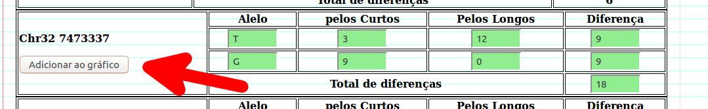Abaixo das tabelas existe um gráfico que atualiza de acordo com que clicamos no botão de adicionar ao gráfico de cada tabela.
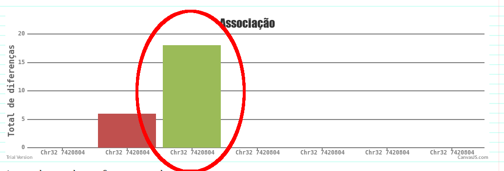| Chr32 7420804 | Alelo | Pelos Curtos | Pelos Longos | Diferença |
|---|---|---|---|---|
| T | 4 | 4 | 0 | |
| C | 8 | 8 | 0 | |
| Total de diferenças | 0 | |||
| Chr32 7472206 | Alelo | Pelos Curtos | Pelos Longos | Diferença |
|---|---|---|---|---|
| T | 9 | 12 | 3 | |
| C | 3 | 0 | 3 | |
| Total de diferenças | 6 | |||
Chr32 7473337 |
Alelo | Pelos Curtos | Pelos Longos | Diferença |
|---|---|---|---|---|
| Total de diferenças | ||||
Chr32 7479580 |
Alelo | Pelos Curtos | Pelos Longos | Diferença |
|---|---|---|---|---|
| Total de diferenças | ||||
Chr32 7482867 |
Alelo | Pelos Curtos | Pelos Longos | Diferença |
|---|---|---|---|---|
| Total de diferenças | ||||
Chr32 7490570 |
Alelo | Pelos Curtos | Pelos Longos | Diferença |
|---|---|---|---|---|
| Total de diferenças | ||||
Chr32 7492364 |
Alelo | Pelos Curtos | Pelos Longos | Diferença |
|---|---|---|---|---|
| Total de diferenças | ||||
Agora, observando essa figura, responda:
1. Qual SNP tem a maior associação?
2. Qual SNP tem a menor associação?
Agora, para pegar o jeito, vamos olhar os dados para a textura do pelo. Os dados serão de seis loci do cromossomo 27, em cinco cães de pelo encaracolado e cinco de pelo liso. Usando o mesmo método anterior, conte o número de vezes que os alelos aparecem para cada um dos seis loci e anote na tabela, calculando a diferença dos SNPs em cada lócus.
| Cachorro | Tipo de pelos | chr27 5525002 | chr27 5541113 | chr27 5542806 | chr27 5545082 | chr27 5557298 | chr27 5568947 |
|---|---|---|---|---|---|---|---|
| 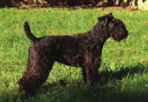 | Encaracolado | CC | CT | CC | AA | CT | CC |
| 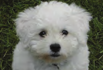 | Encaracolado | TC | CT | TC | GA | CT | TC |
| Encaracolado | TT | CT | TC | GA | CT | TT | |
| Encaracolado | TT | CC | TT | GG | CT | TC | |
| 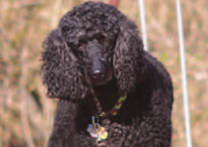 | Encaracolado | TC | CC | TT | GG | TT | TC |
| 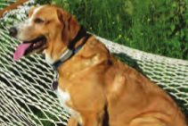 | Liso | TC | CT | CC | GA | TT | TC |
| 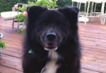 | Liso | TT | TT | CC | AA | TT | TC |
| Liso | CC | CC | CC | GA | CT | CC | |
| Liso | TC | CT | CC | AA | CT | TT | |
| Liso | TC | TT | CC | AA | TT | CC |
Chr27 5525002 |
Alelo | Pelos Curtos | Pelos Longos | Diferença |
|---|---|---|---|---|
| Total de diferenças | ||||
Chr27 5541113 |
Alelo | Pelos Curtos | Pelos Longos | Diferença |
|---|---|---|---|---|
| Total de diferenças | ||||
Chr27 5542806 |
Alelo | Pelos Curtos | Pelos Longos | Diferença |
|---|---|---|---|---|
| Total de diferenças | ||||
Chr27 5545082 |
Alelo | Pelos Curtos | Pelos Longos | Diferença |
|---|---|---|---|---|
| Total de diferenças | ||||
Chr27 5557298 |
Alelo | Pelos Curtos | Pelos Longos | Diferença |
|---|---|---|---|---|
| Total de diferenças | ||||
Chr27 5568947 |
Alelo | Pelos Curtos | Pelos Longos | Diferença |
|---|---|---|---|---|
| Total de diferenças | ||||
Agora, observando essa figura, responda:
1. Qual SNP tem a maior associação?
Bem, nós começamos usando o "olhômetro", mas pode ser difícil de usar, se tivermos muitos indivíduos para avaliar, ou definir o tamanho da associação. Mas nós vimos que podemos então contar as diferenças nos alelos para comparar a associação de um SNP a um fenótipo, mas você ainda vê algum problema nisso?
Veja que o tamanho da diferença ainda está atrelado ao número de cachorros que olhamos, ou seja, ao número de amostras. Se a gente fizer um trabalho olhando 50 cachorros, as barras do nosso gráfico podem ser muito mais altas, mas isso não significa uma maior associação.
Nesse caso podemos usar a estatística chi-quadrado para evitar esse problema. Ela pode ser calculada com a seguinte fórmula:
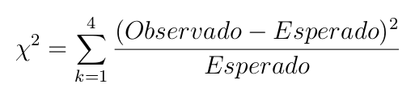
Se não entender a fórmula, não fique preocupado, basicamente, o que vamos fazer é ver qual a diferença do observado, que é a contagem que tivemos de cada alelo para cada tipo de pelo, para o esperado, que é quantos alelos deveríamos contar caso não houvesse associação nenhuma para cada um dos alelos nos dois tipos de pelagem, dessa forma comparando o que observamos com como as contagens deveriam ser em um mundo onde imaginamos não haver nenhuma associação.
E o que seria o esperado? Bem, se não existe associação, qualquer diferença é por acaso, então em média deveríamos ter o mesmo número de alelos para qualquer tipo de pelagem.
Vamos calcular para um SNP para entender melhor, vamos usar os resultados do Chr32 7492364.
| Alelo | Registros de pelo curto observados | Registros de pelo longo observados | Registros esperados |
|---|---|---|---|
| C | 3 | 1 | 2 |
| G | 9 | 11 | 10 |
Veja que se o SNP não tem nenhuma associação, então esperamos que os registros ocorram ao acaso, então assim como esperamos que se jogarmos uma moeda honesta para o alto, tenhamos 50% de cara e coroa, se temos 4 registros do alelo C (3 para pelos curtos e 1 para pelos longos, num total de 4), então esperamos 2 registros de cada (a metade do total de 4 registros), da mesma forma, esperamos 10 registros do alelo G (9 de pelos curtos mais 11 de pelos longos divididos por 2).
Então o valor de chi-quadrado será:
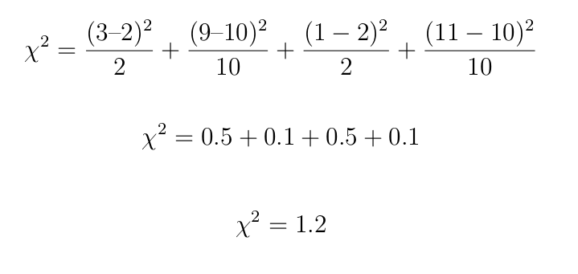
O resultado é 1.2, mas o que significa esse 1.2? Ele significa o desvio do esperado, caso os registros fossem ao acaso, caso houvesse a mesma chance de registrar um alelo ou o outro. Quanto maior a diferença nos registros dos alelos, mais observamos somente um alelo em detrimento do outro, maior será o valor do chi-quadrado, como no gráfico abaixo.
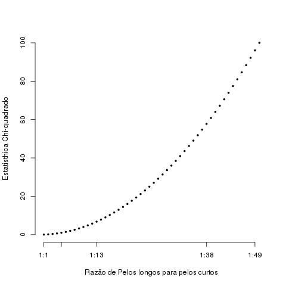
Nesse gráfico, vemos que quando temos um resultado de 1:1, ou 50% de registro de cada caso, temos um valor de chi-quadrado de 0, e conforme aumenta o desvio da proporção de 1:1, esse valor aumenta.
Você se lembra que para o tamanho da pelagem, nós vimos que o maior registro de diferenças foi no SNP do Chr32 7473337? Vamos calcular o valor de chi-quadrado para ele também.
| Alelo | Registros de pelo curto observados | Registros de pelo longo observados | Registros esperados |
|---|---|---|---|
Valor de chi-quadrado:
E agora, o que você obteve de resultado? Lembra-se que essa era a maior barra de diferenças? Logo ele da o valor de chi-quadrado grande certo?
Mas será que esse valor que obtivemos é muito raro ou não, é grande? Podemos usar a distribuição chi-quadrado para calcular uma probabilidade de o quão raro é ver esse desvio, mas a intuição é a de que se você estiver jogando cara e corou contra alguém e essa pessoa ganhar 3 vezes de você, você pode não desconfiar dela, mas se ela ganhar 300 vezes, você vai achar que ela esta roubando certo?
Para o nosso caso, se acharmos uma probabilidade alta de acontecer esse desvio ao acaso, consideramos que o não existe associação do lócus com o fenótipo que estamos estudando. Mas não vamos abordar esses calculos aqui, pois são um pouco mais demorados e complicados.
Nas revistas científicas, os resultados que estamos encontrando aqui são apresentados como um gráfico de Manhattan, que é muito parecido com o gráfico de barras que estávamos fazendo, mas ao invés de barras nos usamos pontos.
Nesse gráfico, o eixo x representa as posições no cromossomo, assim como nós estávamos fazendo, mas no eixo y, nós usamos a probabilidade do desvio de uma razão caso não houvesse associação nenhuma entre o SNP de um lócus e o fenótipo avaliado. Vamos usar a ferramenta Locus Explorer para ver melhor como fica no final o gráfico de Manhattan.
Veja que ao clicarmos em prostate, o conjunto de dados de exemplo são abertos, e temos informações da sua origem, que nesse caso é de uma estudo sobre genes associados ao câncer de próstata em europeus. Veja que ao invés de nossos poucos cachorrinhos que olhamos aqui, ele olharam 25,723 pessoas com câncer de próstata e 26,274 pessoas sadias, é um bocado de gente, mas somente observando muitas pessoas podemos ter mais certeza que um associação não ocorre por acaso.
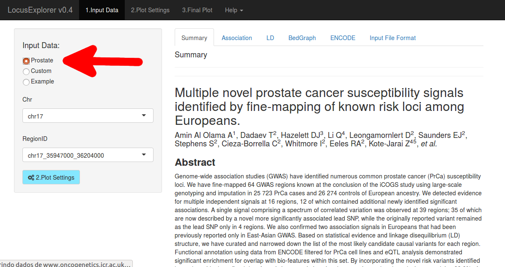Veja que aqui temos as seguintes informações:
Temos várias configurações aqui, mas talvez algo interessante é que podemos mover a linha verde com a configuração Suggestive Line -Log10(Pvalue), inicialmente ela começa em 5, ou seja, somente probabilidades menores que 0.00001 (na figura temos o valor de 5, mas lembre-se que -log10 de 0.00001 é 5, usamos o log para evitar ter que lidar com número com tantas zeros depois da vírgula) serão consideradas como uma associação diferente do acaso, você pode achar esse número pequeno, mas é só olhar no gráfico que temos muitos casos de mutações muito raras, que definitivamente estão associadas ao câncer de próstata.
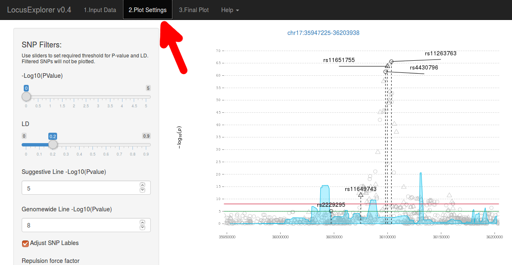Atividade retirada de:
Mapping Genes to Traits in Dogs Using SNPs.